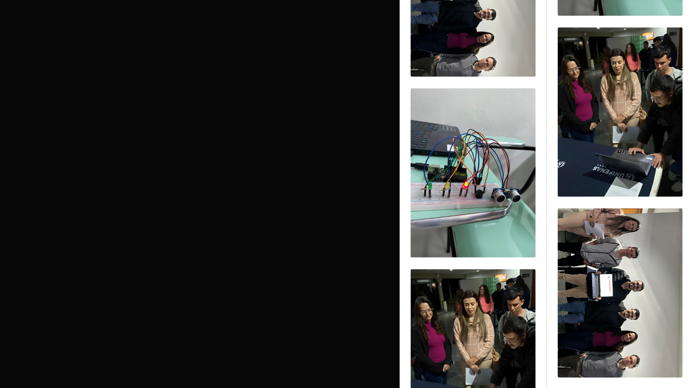

Computer science student, fascinated by the area, enthusiastic about learning
many things
and
becoming
a good professional. Take a look at my portfolio tofollow my academic growth in the field
of
computing.
ABOUT ME
Good to see you here, come and learn more about me.
I am a Computer Science student at Professor Edson Antonio Vellano University. Since the moment I
entered university, I discovered that my journey is not only about acquiring knowledge, but also
about developing skills and constantly seeking challenges that allow me to grow professionally.
I am passionate about learning and collaboration. I always seek opportunities to learn from other
professionals and expand my skill set. My proactive mindset drives me to avoid idleness and embrace
challenges, big or small, with enthusiasm and determination.
I am determined to apply my theoretical knowledge to practical experiences. I prioritize my studies
andam constantly seeking opportunities to learn and grow. Although balancing studies and other
responsibilities can be challenging, I approach this journey with commitment and dedication.
I am always in search of new opportunities to grow, learn, and contribute. If you are looking for
someone motivated, committed, and passionate about challenges, I am ready to face them by your side.
My skills
HyperText Markup Language
HTML
HTML é uma linguagem de marcação utilizada na construção de páginas na
Web. Documentos HTML podem ser interpretados por navegadores. A tecnologia é fruto da junção
entre os padrões HyTime e SGML. HyTime é um padrão para a representação estruturada de
hipermídia e conteúdo baseado em tempo.
Cascading Style Sheet
CSS
Cascading Style Sheets é um mecanismo para adicionar estilos a uma
página web, aplicado diretamente nas tags HTML ou ficar contido dentro das tags
<style>. Também é possível, adicionar estilos adicionando um link para um arquivo CSS
que contém os estilos.
Based On ABC Language
Python
Python é uma linguagem de programação de alto nível, interpretada de
script, imperativa, orientada a objetos, funcional, de tipagem dinâmica e forte. Foi lançada
por Guido van Rossum em 1991.
Intermediate Level Language
C
C é uma linguagem de programação compilada de propósito geral,
estruturada, imperativa, procedural, padronizada pela Organização Internacional para
Padronização, criada em 1972 por Dennis Ritchie na empresa AT&T Bell Labs para
desenvolvimento do sistema operacional Unix.
6
Multi-paradigm Compiled Programming Language
C++
C++ é uma linguagem de programação compilada multi-paradigma e de uso
geral. Desde os anos 1990 é uma das linguagens comerciais mais populares, sendo bastante
usada também na academia por seu grande desempenho e base de utilizadores.
Strongly Typed Language
C#
C# é uma linguagem de programação, multiparadigma, de tipagem forte,
desenvolvida pela Microsoft como parte da plataforma .NET. A sua sintaxe orientada a objetos
foi baseada no C++ mas inclui muitas influências de outras linguagens de programação, como
Object Pascal e, principalmente, Java.
Microsoft Framework
.Net
.NET é um framework livre e de código aberto para os sistemas
operacionais Windows, Linux e macOS. É um sucessor de código aberto do .NET Framework. O
projeto é desenvolvido principalmente pela Microsoft e lançado com a Licença MIT.
Structured Query Language
MySQL
O MySQL é um sistema de gerenciamento de banco de dados, que utiliza a
linguagem SQL como interface. É atualmente um dos sistemas de gerenciamento de bancos de
dados mais populares da Oracle Corporation, com mais de 10 milhões de instalações pelo
mundo.
Structured Query Language
SQLServer
O Microsoft SQL Server é um sistema gerenciador de Banco de dados
relacional desenvolvido pela Sybase em parceria com a Microsoft. Esta parceria durou até
1994, com o lançamento da versão para Windows NT e desde então a Microsoft mantém a
manutenção do produto.
01

Galeria
Explore minha galeria visual, onde cada imagem captura momentos
significativos e projetos marcantes. Cada foto é um vislumbre das minhas habilidades e
criatividade em ação.
Certificados
Descubra minha trajetória de aprendizado através de certificações que
validam minha expertise e compromisso com o conhecimento. Cada certificado representa uma
conquista significativa e um passo adiante na minha jornada profissional.
Portfólio
Explore uma seleção de projetos que demonstram minha dedicação à
excelência e criatividade. Cada item neste portfólio conta uma história única de inovação
e aprendizado.


.png)